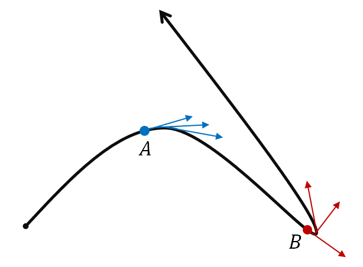

Lesson 11: Curvature
Suppose a smooth curve \(C\) is traced out by a twice differentiable vector function \(\mathbf{r}(s)\), where the parameter is arc length \(s\). Curvature is denoted as \(\kappa\) and is defined below.
Curvature
This is the magnitude of the rate of change in the unit tangent vector \(\mathbf{T}\) with respect to the change in arc length \(s\).
Key Question: If we move a positive differential distance \(ds\) along the curve, what differential change takes place in the unit tangent vectors?

- This expression calculates the answer to that question.
- The curve in the figure turns more sharply at point \(B\) than at point \(A\). Observe this in the change in the unit tangent vectors near these points.
- The curvature is greater at point \(B\) than at point \(A\): \(\kappa\) is larger at \(B\).
Curvature is also the magnitude of the acceleration of a particle moving along the curve at a constant speed of one.
We can also derive the following more convenient formulas for curvature, for a smooth curve traced out by \(\mathbf{r}(t)\). We will use the second one most often.
Curvature, Using the Unit Tangent Vector
Curvature, Using the Cross Product
An Example
Find the curvature \(\kappa\) of the curve traced out by the below vector-valued function at the point where \(t = 3\).
Use the cross product formula. First find the first and second derivatives.
At \(t = 3\), \(\|\mathbf{r}'(3)\| = \sqrt{2 + 36} = \sqrt{38}\).
The curvature at \(t = 3\) is \(\kappa = \frac{\sqrt{19}}{361} \approx 0.0121\).
An Example
Show that the curvature of a circle is the reciprocal of its radius.
A circle of radius \(R > 0\) is traced out by the vector-valued function below.
The first two components of the cross product are zero, since each term contains a zero third component.
The curvature of a circle is \(\frac{1}{R}\), the reciprocal of its radius. A small circle bends sharply and has large curvature; a large circle bends gently and has small curvature.